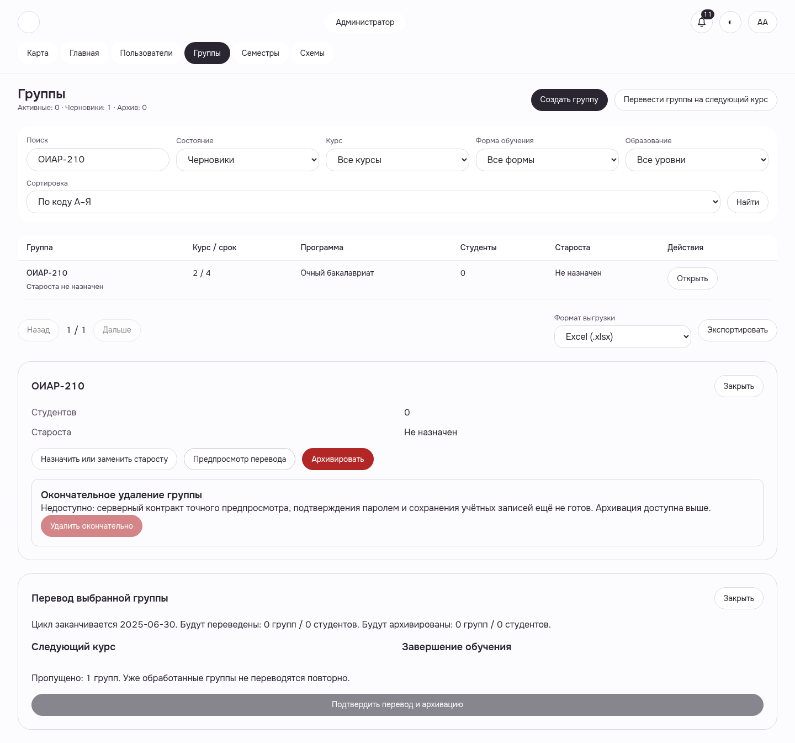

После одного настоящего PROMOTE: курс2, повторный preview ALREADY_PROCESSED. Кадр до последующей архивации собственной пустой группы.
Light1440 · sourcee8db · WEB-ADMIN-GROUPS__promotion-already-processed__light__1440__e8db2f4bb
Manifest/hash · Функциональная приёмка и ограничения · Все галереи
